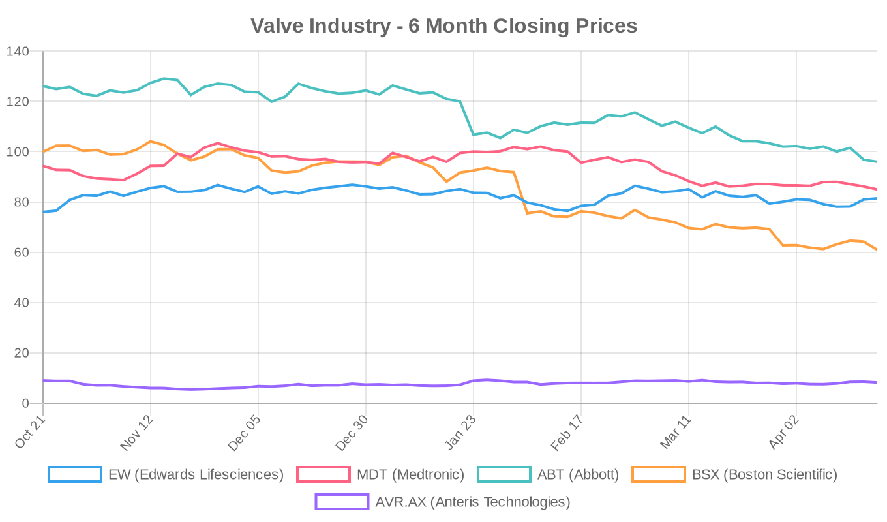
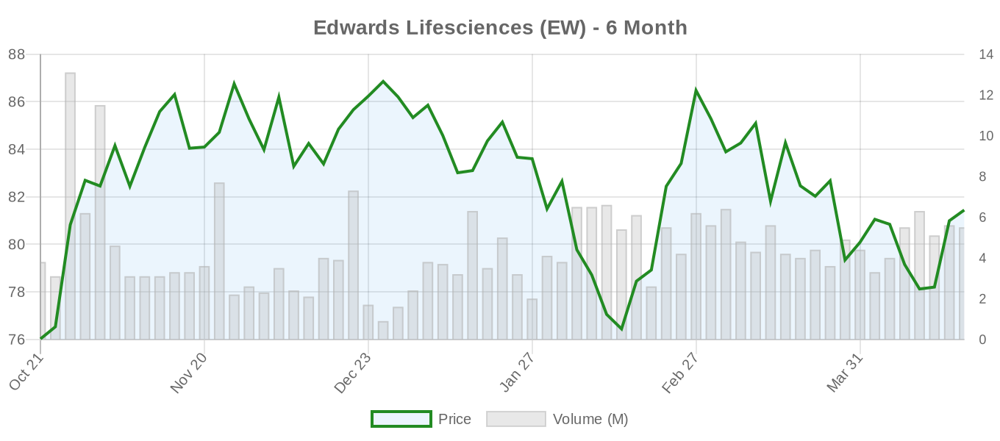
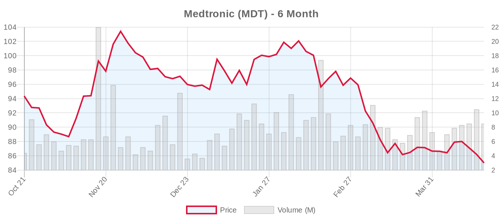
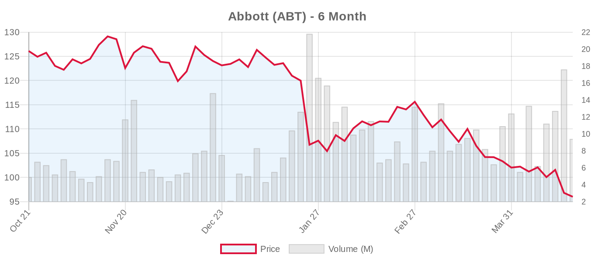
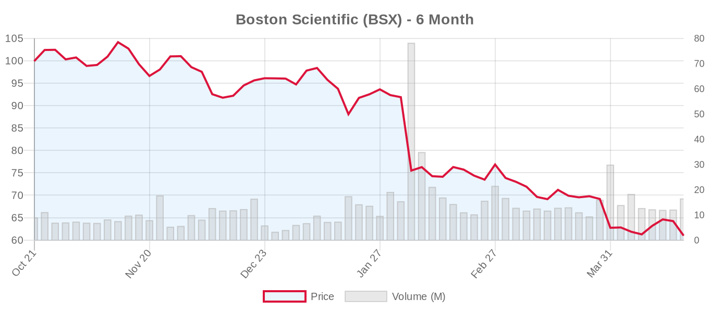
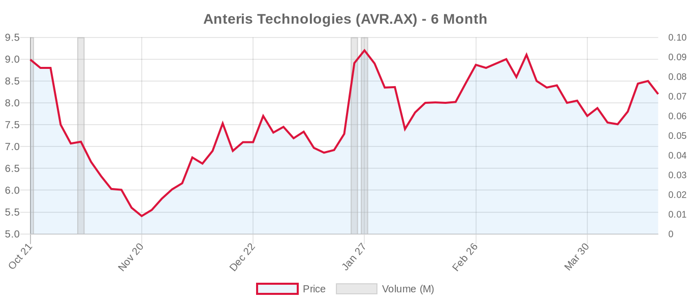

|
||||||||
|
April 21, 2026 By E. Nolan Beckett |
||||||||
|
||||||||
Executive SummaryToday's structural heart news centers on the tricuspid valve space, where real-world comparative data from Vancouver offer the first direct look at patient profiles and outcomes between transcatheter edge-to-edge repair (T-TEER) and transcatheter tricuspid valve replacement (TTVR) — revealing that these are fundamentally different patient populations with sobering 12-month mortality in both groups. Meanwhile, a novel "ELASTA-T" technique from the German Heart Centre demonstrates how to rescue failed T-TEER by electrosurgically detaching clips to enable subsequent valve replacement. On the financial front, a consequential 48-hour window opens: Boston Scientific reports earnings tomorrow and Edwards Lifesciences on Wednesday, with both stocks under significant pressure and the structural heart growth narrative hanging in the balance. For the clinical audience: this is a day to zoom out on the tricuspid transcatheter landscape. The ESC 2025 guidelines elevated T-TEER and TTVR to Class IIa based on TRILUMINATE, Tri.Fr, and TRISCEND II — but today's single-center Canadian data (n=43) remind us that real-world mortality at 12 months runs 29–34%, far exceeding the rosier trial numbers. The ELASTA-T technique, while technically ingenious, underscores an uncomfortable reality: we are building bail-out strategies for therapies whose primary efficacy is still being established. Also notable: a Japanese TAVI registry (n=1,008) delivers rare 10-year readmission data showing that both cardiac and non-cardiac readmissions after TAVI carry roughly equivalent hazard ratios for mortality — a finding that should inform how we counsel elderly patients about the full arc of post-procedural risk. And an Annals of Thoracic Surgery letter takes aim at unmeasured confounders in TAVR comparisons among younger adults, echoing persistent concerns about indication creep in lower-risk populations. Today's Key Findings
Aortic Valve (TAVR/TAVI)Post-TAVI Readmissions: Both Cardiac and Non-Cardiac Events Signal Mortality RiskNaito et al. (Int J Cardiol Heart Vasc, 2026) present a retrospective analysis of 1,008 patients (mean age 85±5 years, 32% male) who underwent TAVI between 2014 and 2024 at a single Japanese center. Using time-dependent Cox models with competing risk analysis, they found that all types of hospital readmission were associated with roughly 4.5- to 5.7-fold increases in all-cause mortality: heart failure (HR 5.54), infection (HR 5.00), stroke (HR 5.69), and fracture (HR 4.47). The 10-year cumulative incidence of heart failure readmission was 38%, fracture 23%, infection 10%, and stroke 9%. Notably, most readmissions clustered in year one, but fracture showed a secondary rise around year two, and all event types increased again after year three. Editorial note: These data are important for several reasons. First, they provide rare 10-year follow-up in an elderly TAVI cohort — a population where competing risks dominate. Second, the magnitude of non-cardiac readmission hazards (fracture HR 4.47, infection HR 5.00) is striking and comparable to heart failure readmission. This underscores that TAVI in octogenarians is not a one-time fix; the frailty trajectory continues. For shared decision-making, especially in patients near the futility boundary, these data should temper expectations. Limitations include single-center Japanese data (different healthcare system, demographics, and frailty profiles from Western cohorts) and potential survivor bias in 10-year estimates. Fragmented QRS Predicts In-Hospital MACE After TAVIKurtul et al. (Am J Cardiol, 2026) retrospectively analyzed 149 TAVI patients and found that fragmented QRS (fQRS) — present in 36% — was independently associated with in-hospital MACE (48.1% vs. 18.9%, p<0.001; adjusted OR 3.77). Patients with fQRS also had higher rates of contrast-induced AKI. Low hemoglobin and smaller valve size were additional independent predictors. While the sample is small and single-center, fQRS is a free, readily available ECG marker that could be incorporated into preprocedural risk assessment. Prospective validation in larger cohorts is needed before clinical adoption. Neosinus Thrombosis After TAVR: A Comprehensive ReviewChen et al. (JAHA, 2026) provide a systematic review of neosinus formation and its relationship to leaflet thrombosis after TAVR — a topic of increasing importance as TAVI extends to younger, lower-risk patients where valve durability is paramount. The review synthesizes evidence on anatomical remodeling, hemodynamic determinants, and thrombosis mechanisms, concluding that local hemodynamics is the dominant and potentially modifiable factor. The authors advocate for patient-specific computational modeling to optimize THV design and deployment. This connects directly to the in silico study below and to the broader Boxwell et al. (Comput Methods Programs Biomed, 2026) computational analysis showing that THV oversizing increases leaflet oscillatory shear stress and viscous shear downstream — both markers of thrombogenic risk. These findings reinforce the ESC 2025 emphasis on lifetime management planning and raise questions about whether current sizing algorithms adequately account for long-term thrombotic risk. TAVI Efficiency Gains in Canada Without Compromising SafetyBhatt et al. (CJC Open, 2026) report on a quality improvement initiative at a Canadian TAVI center (n=1,019 patients, 2019–2024) demonstrating significant increases in annual case volume (+0.51 cases/year) and decreases in total OR time (-10.2 minutes/year) through conscious sedation, left ventricular pacing, and hybrid closure strategies. High-case-volume days showed comparable outcomes to lower-volume days except for reduced bleeding. This is health system optimization data rather than clinical discovery, but it matters in the Canadian context where TAVI wait times can be substantial, and it provides a replicable efficiency framework. Unmeasured Confounders in TAVR Comparisons Among Young AdultsHuang et al. (Ann Thorac Surg, 2026) contribute a correspondence highlighting interpretational pitfalls when comparing TAVR outcomes in younger patients. While the full text is not available, the title alone signals continued surgical community concern about unmeasured confounding in non-randomized TAVR studies — a theme consistent with critiques from Badhwar and Mehaffey regarding indication creep. This is particularly relevant given the ESC 2025 guideline shift recommending TAVI at age ≥70 with tricuspid AV anatomy: patients aged 65–70 sit in a contested zone where the ACC/AHA allows shared decision-making but the ESC prefers SAVR. These correspondences serve as important guardrails against over-interpretation of observational data in younger patients where SAVR durability advantages may be most consequential. Additional Aortic Valve Items
Mitral Valve (MitraClip, PASCAL, TMVR)TEER vs. Surgery in Acute Severe Primary MR: A Cardiac ICU PerspectiveLohse et al. (Arch Cardiovasc Dis, 2026) report on transcatheter edge-to-edge repair versus surgery in acute severe primary mitral regurgitation from a cardiac ICU experience. No abstract is available, but the title alone is provocative — acute severe PMR (e.g., ruptured chordae, flail leaflet) is traditionally an urgent surgical indication with excellent repair rates. Using TEER in this setting would represent a significant deviation from both ACC/AHA and ESC guidelines, which position TEER as Class IIa only for high-surgical-risk patients with suitable anatomy. Watch for the full publication details; the clinical context (cardiogenic shock, prohibitive surgical risk) will be critical for interpretation. Tricuspid Valve (TriClip, TTVR)T-TEER vs. TTVR: Different Patients, Different Diseases?[NOTABLE] Jelisejevas et al. (CJC Open, 2026) provide the first direct comparison of patient profiles and outcomes between T-TEER (n=14) and TTVR (n=29) from a single Canadian center (May 2018–April 2023). Key findings:
Editorial perspective: These numbers deserve careful parsing. The 12-month all-cause mortality of 29–34% in both groups is sobering — far exceeding the event rates in TRILUMINATE (9.3% at 1 year) and TRISCEND II (~12% at 1 year). This likely reflects several factors: smaller sample, real-world patient selection beyond trial criteria, and the Canadian healthcare context where referral patterns may differ. The finding that T-TEER and TTVR patients represent different phenotypes is clinically intuitive — repair works best when anatomy cooperates (lower GLIDE scores), while replacement is reserved for anatomically challenging cases. But the 12-month mortality in both groups raises the fundamental question: are we treating these patients too late? The ESC 2025 guidelines' emphasis on avoiding referral when severe RV dysfunction and end-organ damage have already occurred is directly relevant. This study cannot tell us about optimal patient selection — it tells us about the patients we're currently selecting, and the outcomes should give us pause. The sample is far too small for any statistical comparison between groups. ELASTA-T: A Rescue Technique for Failed T-TEER Before TTVRAlvarez-Covarrubias et al. (EuroIntervention, 2026) from the German Heart Centre Munich describe the ELASTA-T (Electrosurgical Laceration and Stabilisation of T-TEER) technique — a standardized method for converting failed T-TEER to TTVR when centrally positioned clips obstruct valve replacement deployment. The technique borrows from BASILICA and LAMPOON principles: a modified "flying V" coronary guidewire is used to electrosurgically lacerate the leaflet tissue, detaching the most centrally placed clip, which is then mobilized toward the septal leaflet to clear space for transcatheter valve implantation. Editorial note: This is technically impressive work, and the step-by-step standardization is valuable for the interventional community. However, it also highlights an uncomfortable reality about the current tricuspid transcatheter ecosystem. We are building rescue pathways for a therapy that received its first guideline endorsement only months ago (ESC 2025, Class IIa). The need for ELASTA-T underscores that T-TEER durability remains a concern — recurrent TR after clip therapy is not uncommon — and that our "lifetime management" planning for tricuspid interventions is still in its infancy. The technique requires bilateral femoral venous access, deflectable sheaths, microcatheters, snare-assisted rails, and preventive hemodynamic support on standby. This is not a community-hospital procedure. The question isn't whether we can do this, but whether the initial therapeutic strategy should be better optimized to reduce the need for it. News Coverage: Real-World TTVR DataBoth Diagnostic and Interventional Cardiology and Medscape covered the previously published STS/ACC TVT Registry TTVR data (1,034 procedures, 98.4% implantation success, 3.1% 30-day mortality, 15.9% new CIED in pacemaker-naive patients). The coverage emphasizes positive outcomes, but readers should note: 30-day mortality of 3.1% in a procedure designed for symptomatic relief (not mortality reduction) establishes a meaningful safety threshold, and the 15.9% pacemaker rate is a significant morbidity signal that deserves ongoing scrutiny as volumes scale. Surgical vs. Transcatheter ComparisonsToday's direct comparison data are limited, but two items warrant attention:
For broader context: the recently published meta-analysis by Khan et al. showing a 20% mortality reduction for TAVR vs. SAVR in lower-risk patients at 5 years (HR 0.80) continues to generate debate. As Kaul and others have noted, when intermediate-risk trials are excluded and only truly low-risk data are analyzed, the mortality difference attenuates. The ESC 2025 guidelines acknowledged this evidence in shifting the TAVI threshold to age ≥70, but the ACC/AHA position (age >80 or life expectancy <10 years for TAVI preference) remains more conservative. The truth likely lives in nuanced patient selection rather than age cutoffs — but age cutoffs are what guidelines must provide. Device & TechnologyIn Silico Modeling of THV Oversizing and Elliptical DeploymentBoxwell et al. (Comput Methods Programs Biomed, 2026) present a validated computational framework modeling how THV oversizing and elliptical deployment affect leaflet mechanics, hemodynamics, and stent deformation. Key findings: oversizing reduced valve expansion at the supra-annular level (<90%), increased leaflet coaptation and pinwheeling, but paradoxically reduced peak leaflet stresses. However, oversizing also caused early mainstream flow separation, increasing oscillatory shear and viscous shear stress — both markers of thrombogenic risk. Elliptical deployment created heterogeneous stent deflections and variable leaflet stress distributions. The authors propose that more flexible THV stents could mitigate adverse effects and recommend post-TAVI balloon dilatation to optimize expansion. This work connects directly to the clinical concern about neosinus thrombosis reviewed by Chen et al. in JAHA today, and reinforces the lifetime management theme: sizing decisions at the index procedure have cascading consequences for durability and thrombosis risk. TRICENTO G2: New First-in-Human Tricuspid Replacement SystemA new first-in-man trial (NCT07536724) has been registered for the TRICENTO G2 transcatheter valve system for tricuspid regurgitation, sponsored by Medira GmbH, enrolling 10 patients. This adds another entry to an increasingly crowded tricuspid replacement field already populated by Edwards' EVOQUE, Medtronic's Intrepid (adapted), and various earlier-stage devices. The tricuspid replacement space is compelling — replacement offers a more complete solution for TR than repair — but the pacemaker rates, durability questions, and patient selection challenges remain unresolved. Industry & Market
Financial AnalysisThe structural heart device sector faces a critical 48-hour window. Boston Scientific reports Q1 earnings tomorrow (April 22) and Edwards Lifesciences follows on Wednesday (April 23) — and both companies enter earnings season with their stocks under meaningful pressure. BSX has shed nearly 39% over six months, while EW has managed a modest 7% gain but remains 18% below analyst targets. The divergence is notable: Edwards' pure-play structural heart focus has provided relative stability, while Boston Scientific's broader portfolio has been caught in the broader medtech selloff. For Edwards, the Q1 print will be the first major data point on whether the ESC 2025 guideline expansion (TAVI recommended at ≥70, TEER upgraded to Class I for ventricular SMR, tricuspid therapy at Class IIa) is translating into volume growth. Consensus expects $0.73 EPS on $1.60B revenue. Key metrics to watch: TAVR growth rate by geography (Europe should benefit from ESC alignment), TMTT segment performance (PASCAL and EVOQUE), and any commentary on competitive dynamics from the LANDMARK trial's positive Myval data. Edwards' forward P/E of 24.5x prices in significant growth, so any miss could be punished given the stock's recent recovery from January lows. Boston Scientific's structural heart narrative is harder to isolate given its diversified portfolio, but WATCHMAN left atrial appendage closure and ACURATE neo2 TAVR franchise performance will be closely watched. The 5% single-day drop today suggests pre-earnings positioning or broader market anxiety. At a forward P/E of 15.6x, BSX is trading at a steep discount to its historical multiple, which either represents opportunity or a market re-rating of its growth trajectory. The broader thesis: structural heart remains one of the highest-growth segments in medtech, driven by expanding indications (asymptomatic AS, tricuspid disease, atrial SMR) and guideline tailwinds. But the macro environment — tariff concerns, hospital capital expenditure uncertainty, and healthcare utilization patterns — creates near-term headwinds that may overshadow fundamental growth. Investors should also note that private players (JenaValve, Meril Life Sciences) continue to develop competitive TAVI platforms that could pressure pricing, particularly in emerging markets. Valve Industry Stocks Edwards Lifesciences (EW)
Edwards enters earnings with modest momentum — up 0.56% today and 7.13% over six months, making it the best-performing name in our coverage universe. The stock has recovered from its January low of $69.21 but remains well below the $96.33 analyst consensus. Wednesday's report will be a referendum on whether ESC 2025 guideline expansion is driving procedure volumes. The SAPIEN 3 Ultra PMCF study (NCT04555967) remains active, and the new Chinese BAV TAVI registry (NCT07450196, 170 patients) signals Edwards' continued push into the BAV TAVI space despite both guidelines rating this as Class IIb. Key risk: the forward P/E of 24.5x assumes sustained high-single-digit TAVR growth — any deceleration would likely compress the multiple. Medtronic (MDT)
Medtronic continues its slide — down nearly 10% over six months and approaching its 52-week low of $79.93. The structural heart segment (Evolut TAVR, Intrepid TMVR) represents a small fraction of revenue but carries outsize strategic importance. The Evolut Low Risk trial (NCT02701283) long-term follow-up data will be critical for Medtronic's competitive positioning against Edwards' SAPIEN platform. The Intrepid TMVR Pivotal trial (NCT03242642, enrolling 1,056 patients) continues recruiting — this could be transformative if results support transcatheter mitral replacement as a viable therapy. At a forward P/E of 14.0x, Medtronic looks cheap relative to its medtech peers, but the discount reflects execution concerns across multiple business lines. The 28% gap to analyst targets is the widest in our coverage universe. Abbott (ABT)
Abbott has been hammered — down nearly 24% in six months and trading near its 52-week low. The structural heart franchise (MitraClip/TriClip) is a relative bright spot given the ESC 2025 upgrade of TEER for ventricular SMR to Class I and tricuspid TEER to Class IIa. The TRILUMINATE Pivotal trial (NCT03904147) is active and not recruiting, with longer-term data expected to further support the TriClip franchise. The REPAIR-MR trial (NCT04198870, MitraClip vs. surgery for primary MR) is also active — this could reshape the TEER-vs-surgery landscape for primary MR if results favor repair. Abbott's broader challenges (litigation headwinds, competitive pressures in diagnostics) are depressing the stock, but the structural heart pipeline remains compelling at these valuations. Boston Scientific (BSX)
Boston Scientific dropped another 5% today and is down nearly 39% over six months — the sharpest decline in our coverage universe. The stock is trading at its 52-week low of $60.59, and tomorrow's earnings report is the most consequential near-term catalyst. The 58.5% gap between current price and analyst consensus ($96.66) is extraordinary — either analysts are dramatically wrong or the market is pricing in a scenario that hasn't materialized. BSX's structural heart exposure is more indirect (ACURATE neo2 TAVR in Europe, WATCHMAN LAAO), but the CLASP II TR trial (NCT04097145, PASCAL for TR) is a significant franchise bet with 870 patients enrolling. A strong Q1 print with reassuring guidance could catalyze a significant relief rally; a miss could test new lows. Anteris Technologies (AVR.AX)
Anteris continues to trade in a range as it develops its DurAVR single-piece TAVR valve, designed for more physiologic hemodynamics and potentially improved durability through its unique single-piece design. As a pre-revenue company, Anteris is a speculative play on next-generation TAVR technology. The stock has recovered significantly from its 52-week low of A$4.63 but remains below the single analyst's A$13 target. Clinical data milestones will be the key catalysts. Note: JenaValve Technology, J Valve Technology, and Meril Life Sciences are private companies without publicly traded equity. Market OutlookThe structural heart sector enters earnings season at a crossroads. The fundamental story is the best it's ever been — ESC 2025 expanded indications across all three valve positions, asymptomatic AS intervention is moving mainstream, and tricuspid transcatheter therapy has arrived as a new treatment category. Yet the stocks tell a different story: three of five public names are down double digits over six months. The disconnect likely reflects macro headwinds (tariff uncertainty, healthcare utilization questions) rather than structural heart fundamentals. This week's BSX and EW earnings will either confirm the macro overhang or reveal underlying demand weakness. Investors with a 2–3 year horizon may find this an attractive entry point for the sector; those with shorter time horizons should wait for clarity from the earnings prints. Clinical Trial UpdatesAortic Valve Trials
Landmark Aortic Trials (Ongoing)
Mitral Repair Trials
Mitral Replacement Trials
Tricuspid Repair Trials
Tricuspid Replacement Trials
Other Relevant Trials
Social & Conference HighlightsNo major conference presentations or notable social media discussions identified today. The structural heart community's attention is directed toward this week's earnings reports and the ongoing assimilation of ESC 2025 guideline changes into clinical practice. Looking Ahead: Tomorrow brings Boston Scientific Q1 earnings — watch for ACURATE neo2 and WATCHMAN commentary — and Wednesday is the main event with Edwards Lifesciences Q1, where TAVR volume trends and TMTT segment performance will set the narrative for structural heart in 2026. On the clinical side, the tricuspid space continues its rapid evolution: today's T-TEER vs. TTVR comparison and the ELASTA-T rescue technique both highlight that we're building the plane while flying it. The science needs to keep pace with the enthusiasm. — E. Nolan Beckett | The Valve Wire |
||||||||
|
|
||||||||
|
||||||||
|